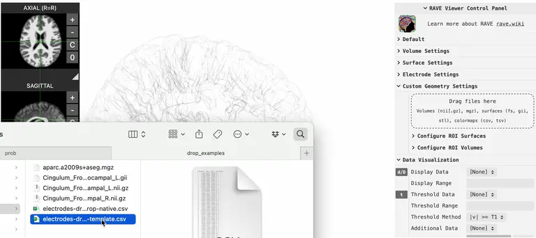
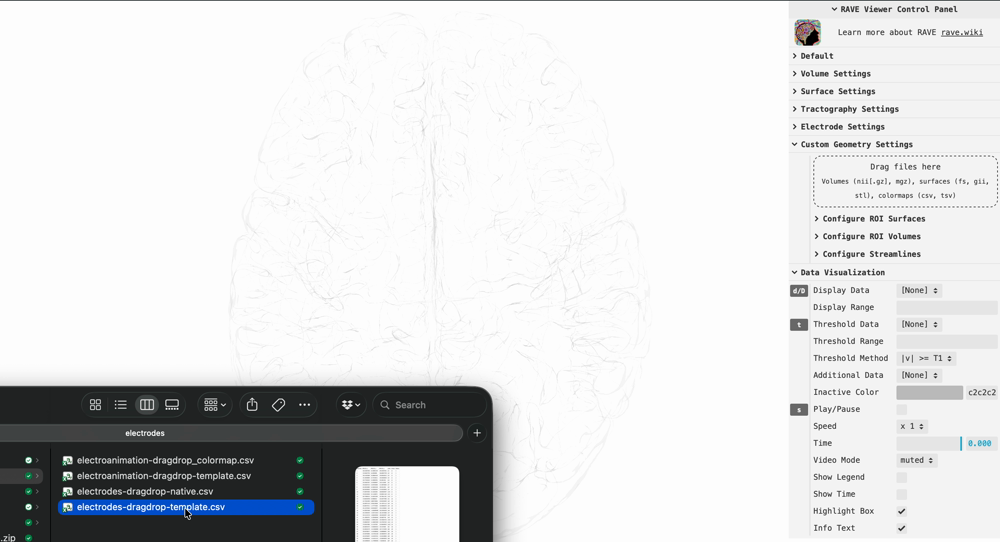

![]()
Instructions
- Download the MNI152 viewer here
- Unzip the file, open file
RAVE_MNI_template.html, a MNI152 template viewer
1. Drag & drop electrode coordinates

Prepare a CSV file containing electrode coordinates and drop it into the viewer as shown above. An example file electrodes/electrodes-dragdrop-template.csv is included in the downloaded zip.
The CSV must contain the following columns (column names are case-sensitive):
| Electrode | MNI152_x | MNI152_y | MNI152_z | Label |
|---|---|---|---|---|
| 1 | -28.23 | 15.38 | -39.43 | LI1 |
| 2 | -33.50 | 16.10 | -36.69 | LI2 |
| … | … | … | … | … |
Electrode(required): integer electrode channel numberMNI152_x,MNI152_y,MNI152_z(required): electrode position in MNI152 space (mm)Label(required): text label displayed next to the electrode sphereGroup(optional): group name; electrodes sharing the same group are rendered in the same colorRadius(optional): sphere radius in mm (default:1)
After dropping the file the electrodes appear in the viewer. To remove them, expand the control panel > Electrode Settings > Clear Uploaded Electrodes.
For a native-subject viewer, replace MNI152_x / MNI152_y / MNI152_z with T1R / T1A / T1S (subject-native coordinates). All other columns remain the same. An example is provided in electrodes/electrodes-dragdrop-native.csv.
2. Set electrode values

Once electrodes are visible in the viewer you can color them by any numeric or categorical variable. Prepare a second CSV — an example is provided in electrodes/electroanimation-dragdrop-template.csv — and drop it into the viewer.
The value CSV must contain at least an Electrode column plus one or more value columns:
| Electrode | Power | Cluster |
|---|---|---|
| 1 | 1.92 | A |
| 2 | 0.98 | B |
| … | … | … |
Electrode(required): must match the channel numbers in the coordinate fileTime(optional): numeric time-point in seconds; when present the viewer animates the values over time- Value columns (at least one required): any name you choose (e.g.
Power,Cluster,BetaBand)- Numerical values are displayed on a continuous color scale
- Categorical values must be non-numeric strings (use
"A","B","C"rather than1,2,3)
After dropping the file, expand the control panel > Electrode Settings > Display Data, or use the keyboard shortcut D to select which variable to display.
3. Customize the color map

Complete steps 1 and 2 before attempting this step.
To override the default colors, create a colormap CSV whose file name is the value CSV name with _colormap appended before the .csv extension — for example if the value file is my_values.csv, name the colormap file my_values_colormap.csv.
- Column names must match the value column names from the value CSV (e.g.
Power,Cluster) - Each row contains one key color (hex code such as
#2166ac, or an HTML color name such asred) per column
| Power | Cluster |
|---|---|
| aliceblue | #e41a1c |
| #f7f7f7 | #377eb8 |
| purple | #4daf4a |
| #7d7f4a |
- For continuous variables the listed colors are treated as key stops and automatically interpolated across the full value range
- For categorical variables each row corresponds to one category in alphabetical order (first row → first category, second row → second category, …); unused rows are ignored
Drop the colormap CSV into the viewer the same way as the value CSV. The electrode colors update immediately.